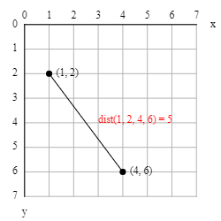
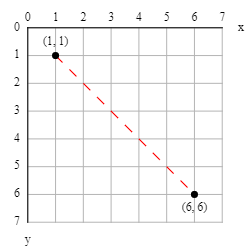

P5 library - Math tidbits
Absolute vs relative measurements
...
# GOOD - Will adjust to the canvas size
from p5 import *
# Change the width here and see what happens.
WIDTH = 300
def setup():
size(WIDTH, WIDTH/1.6)
no_loop()
def draw():
background("grey")
no_stroke()
fill("red")
rect(0, 0, width/3, height)
fill("white")
rect(1/3*width, 0, width/3, height)
fill("blue")
rect(2/3*width, 0, width/3, height)
run()
# BAD - Will NOT adjust to the canvas size
from p5 import *
# Change the width here and see what happens.
WIDTH = 300
def setup():
size(WIDTH, WIDTH/1.6)
no_loop()
def draw():
background("grey")
no_stroke()
fill("red")
rect(0, 0, 100, 188)
fill("white")
rect(100, 0, 100, 188)
fill("blue")
rect(200, 0, 100, 188)
run()
constrain
constrain(value, start, stop) returns a value which is guaranteed to be in the [start..stop] range.
constrain(1, 3, 7) # returns 3.0 (because 1 is below 3)
constrain(2, 3, 7) # returns 3.0 (because 2 is below 3)
constrain(3, 3, 7) # returns 3.0 (because 3 is in the range)
constrain(4, 3, 7) # returns 4.0 (because 4 is in the range)
constrain(5, 3, 7) # returns 5.0 (because 5 is in the range)
constrain(6, 3, 7) # returns 6.0 (because 6 is in the range)
constrain(7, 3, 7) # returns 7.0 (because 7 is in the range)
constrain(8, 3, 7) # returns 7.0 (because 8 is above 7)
constrain(9, 3, 7) # returns 7.0 (because 9 is above 7)
Here is a program that draws a red dot at the mouse position constrained to the white area:
from p5 import *
def setup():
size(200, 200)
rect_mode(CORNERS)
def draw():
x1 = width * 0.2
y1 = height * 0.2
x2 = width * 0.8
y2 = height * 0.8
mx = constrain(mouse_x, x1, x2) # constrain horizontally
my = constrain(mouse_y, y1, y2) # constrain vertically
push_style()
background(240)
text(f"mouse_x: {mouse_x:.0f} => mx: {mx:.0f}\nmouse_y: {mouse_y:.0f} => my: {my:.0f}", 10, 10)
rect(x1, y1, x2, y2)
stroke("red")
stroke_weight(10)
point(mx, my)
pop_style()
run()
norm
norm(value, start, stop) returns a value which represents where value is relatively to the [start..stop] range.
- equal to
start: returns 0.0
- equal to
stop: returns 1.0
- in the middle: returns a value between 0 and 1
- below
start: returns a negative value
- above
stop: returns a value greater than 1
norm(1, 3, 7) # returns -0.5 (because 1 is below 3)
norm(2, 3, 7) # returns -0.25 (because 2 is below 3)
norm(3, 3, 7) # returns 0.0 (because 3 is the start)
norm(4, 3, 7) # returns 0.25 (because 4 is in the middle)
norm(5, 3, 7) # returns 0.5 (because 5 is exactly in the middle)
norm(6, 3, 7) # returns 0.75 (because 6 is in the middle)
norm(7, 3, 7) # returns 1.0 (because 7 is the stop)
norm(8, 3, 7) # returns 1.25 (because 8 is above 7)
norm(9, 3, 7) # returns 1.5 (because 9 is above 7)
map
map(value, start1, stop1, start2, stop2) converts a value from the [start1..stop1] range into the [start2..stop2] range.
map(1, 3, 7, 10, 50) # returns -10.0
map(2, 3, 7, 10, 50) # returns 0.0
map(3, 3, 7, 10, 50) # returns 10.0
map(4, 3, 7, 10, 50) # returns 20.0
map(5, 3, 7, 10, 50) # returns 30.0
map(6, 3, 7, 10, 50) # returns 40.0
map(7, 3, 7, 10, 50) # returns 50.0
map(8, 3, 7, 10, 50) # returns 60.0
map(9, 3, 7, 10, 50) # returns 70.0
Here is a program that changes the background color according to the x-coordinate of the mouse:
from p5 import *
def setup():
size(400, 400)
def draw():
hue = map(mouse_x, 0, width, 0, 255) # map mouse_x from [0..width] to [0..255]
diameter = map(mouse_y, 0, height, 10, height * 0.8) # map mouse_y from [0..height] to [10..height*0.8]
push_style()
background(240)
fill(0)
text(f"mouse_x: {mouse_x:.0f} => hue: {hue:.0f}\nmouse_y: {mouse_y:.0f} => diameter: {diameter:.0f}", 10, 10)
color_mode(HSB)
fill(hue, 255, 255)
no_stroke()
circle(width / 2, height / 2, diameter)
pop_style()
run()
dist & mag
dist(x1, y1, x2, y2) calculates the distance between two points (x1,y1) and (x2,y2).
dist(1, 2, 4, 6) # returns 5.0

mag(x, y) is a shortcut for dist(0, 0, x, y), the distance between the origin (0,0) and point (x,y).
Here is a program that shows the distance from the canvas center to the mouse:
from p5 import *
def setup():
size(200, 200)
def draw():
cx = width / 2
cy = height / 2
d = dist(cx, cy, mouse_x, mouse_y)
background(240)
line(cx, cy, mouse_x, mouse_y)
text(f"distance: {d:.0f}", 10, 10)
run()
lerp
lerp is an abbreviation for linear interpolation and is used for easing (= changing progressively) from a start value into a stop value.
It is convenient for creating motion along a straight path and for drawing dotted lines.
lerp(start, stop, amt) calculates start + (stop - start) * amt.
- when
amt is 0: returns start
- when
amt is 0.1: returns a little bit more than start, etc
- when
amt is 0.5: returns the average of start and stop
- when
amt is 0.9: returns a little bit less than stop, etc
- when
amt is 1: returns stop
lerp(1, 5, 0) # returns 1.0 - the start value
lerp(1, 5, 0.1) # returns 1.4
lerp(1, 5, 0.2) # returns 1.8
lerp(1, 5, 0.3) # returns 2.2
lerp(1, 5, 0.4) # returns 2.6
lerp(1, 5, 0.5) # returns 3.0 - the middle (average)
lerp(1, 5, 0.6) # returns 3.4
lerp(1, 5, 0.7) # returns 3.8
lerp(1, 5, 0.8) # returns 4.2
lerp(1, 5, 0.9) # returns 4.6
lerp(1, 5, 1) # returns 5.0 - the stop value
Here is a program that draws a dotted line:
from p5 import *
def setup():
size(100, 100)
no_loop()
def draw():
x1, y1 = 10, 10
x2, y2 = 60, 60
n = 20
stroke("red")
for i in range(0, n, 2): # the step of 2 is what makes the line dotted
amt1 = i * 1 / n # dash start amount
amt2 = (i + 1) * 1 / n # dash stop amount
line(
lerp(x1, x2, amt1), lerp(y1, y2, amt1),
lerp(x1, x2, amt2), lerp(y1, y2, amt2)
)
run()

Randomness
Angles
P5 uses radians instead of degrees.
One full turn is 2π (= 360°).
The angles are measured clockwise with zero being east.
You can convert degrees to radians with radians(degrees) and radians to degrees with degrees(radians).
Besides the usual PI, P5 also defines TWO_PI, HALF_PI, QUARTER_PI, and TAU which is 2π.
| Degrees | Radians |
|---|
| 0° | 0 |
| 45° | PI/4 = QUARTER_PI |
| 90° | PI/2 = HALF_PI |
| 135° | 3*PI/4 = 3*QUARTER_PI |
| 180° | PI |
| 225° | 5*PI/4 = 5*QUARTER_PI |
| 270° | 3*PI/2 = 3*HALF_PI |
| 315° | 7*PI/4 = 7*QUARTER_PI |
| 360° | 2*PI = TWO_PI = TAU |
cos & sin
...
...
Example #1 - Polygons
Here is a program that draws a regular polygon for a given number of sides and radius.
from p5 import *
from math import cos, sin
NPOINTS = 5 # this is the same as the number of sides
RADIUS = 120
def setup():
size(300, 300)
no_loop()
def draw():
background(240) # light grey
translate(width/2, height/2)
fill(200, 255, 200) # light green
stroke_weight(3)
begin_shape()
for i in range(NPOINTS):
x = RADIUS * cos(radians(i * 360 / NPOINTS))
y = RADIUS * sin(radians(i * 360 / NPOINTS))
vertex(x, y)
end_shape(CLOSE)
run()
Challenge #1: Modify the code to start drawing from the top (North) instead of from the right (East).
Challenge #2: Modify the code to draw stars instead of polygons.
Example #2 - Pulsating circle
Here is a program that draws a pulsating circle with changing color.
from p5 import *
from math import cos, sin
def setup():
size(300, 300)
def draw():
# frame_count increases by one every time
angle_rad = radians(frame_count)
# Calculate the new diameter.
freq = 1 # change to adjust the speed
diameter = map(sin(freq * angle_rad), -1, 1, height*0.1, height*0.9)
# Calculate the new color.
freq = 0.2 # change to adjust the speed
hue = map(cos(freq * angle_rad), -1, 1, 0, 255)
# Update the canvas.
color_mode(RGB)
background(240) # lightgrey
translate(width/2, height/2)
color_mode(HSB)
fill(hue, 255, 255)
stroke_weight(3)
circle(0, 0, diameter)
run()
atan2